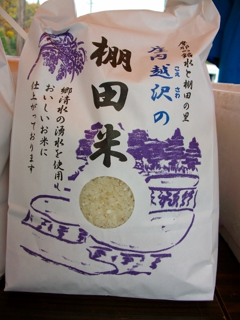
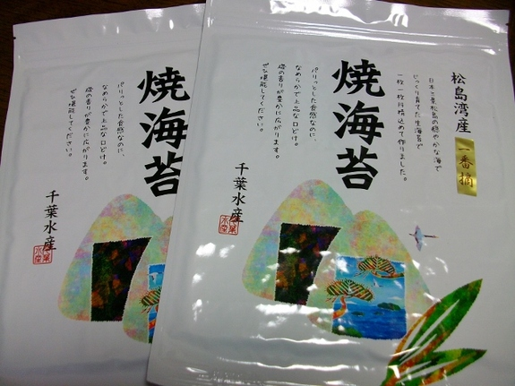
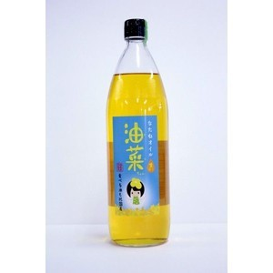
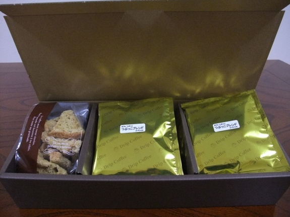
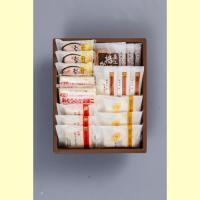
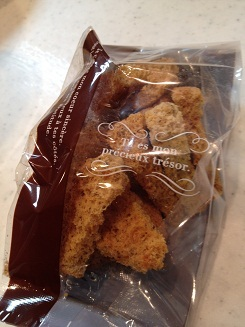

産直connect
生産物一覧

郷清水（ごうしみず）の棚田米
生活雑排水を全く含まない、摩耶山から凜々と湧き出る湧き水で育てた「棚田米」（若手の連携農家さんが生産した、清らかで優しく美味しいお米です）

松島湾産－番摘み－高級の焼海苔
日本三景松島に浮かぶ浦戸諸島産(全形10枚)焼き海苔を紫外線と湿気から守る包装です。
数量
レジへ進む

たね油「油菜ちゃん」
南相馬から自信を持って全国に発信できるブランド開発で生まれた「油菜ちゃん」。ナタネによる農地再生・地域復興のシンボルです。やがては、ナタネの残さいからバイオガスを作り、エネルギーの地産地消と自然循環型の未来を築きたい、そんな夢を描いて生産組合の７人の農家さんが頑張っています。（注釈：放射能で汚染した農地でナタネ・ヒマワリ・大豆などを栽培しても、葉・茎・油粕にはセシウムが残りますが、油には全く移行しません。「油菜ちゃん」も全量検査でセシウムなどの放射能は検出されません。安心してお召し上がり戴けます。

“カフェつぶっこ”（宮城県丸森町）オリジナルブレンドコーヒー
元気がなくなった宮城県丸森町大張地区を元気にしたいと交流体験自宅カフェ”カフェつぶっこ”を起業した「佐藤真紀さん」の「志」に賛同した、宮城県仙台市で有名な「自家焙煎珈琲まめ坊」さんが共同で開発したオリジナルブレンドコーヒーです。

大豆と白身魚で作られている 「おとうふかまぼこ」セット
おとうふかまぼこ真打2枚・おとうふかまぼこ3枚
おとうふかまぼこ笹3枚・おとうふかまぼこ小丸生姜3枚
おとうふかまぼこお好み焼2枚・直江の揚げかま3枚
株式会社直江商店は、主力商品の「おとうふかまぼこ」の全国のファンからの応援で、津波で全壊した本社工場を1年2ヶ月後に現地再建しました。まだまだ、傷跡の残る工場周辺、直江の「おとうふかまぼこ」を求めに本社工場隣の直売所には全国からお客様がお越しになっています。

シフォンケーキセット
シフォンケーキは2014年丸森町観光物産協会主催「第4回もりもり特産品大賞（グランプリ）」を獲得しています。